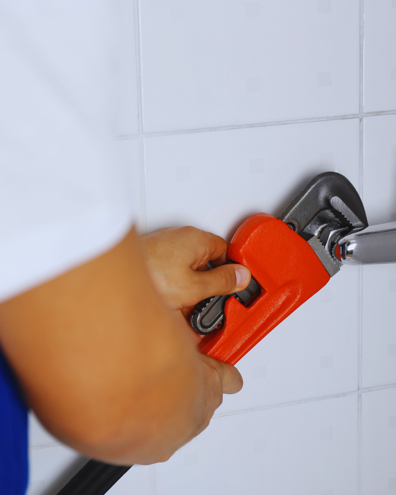
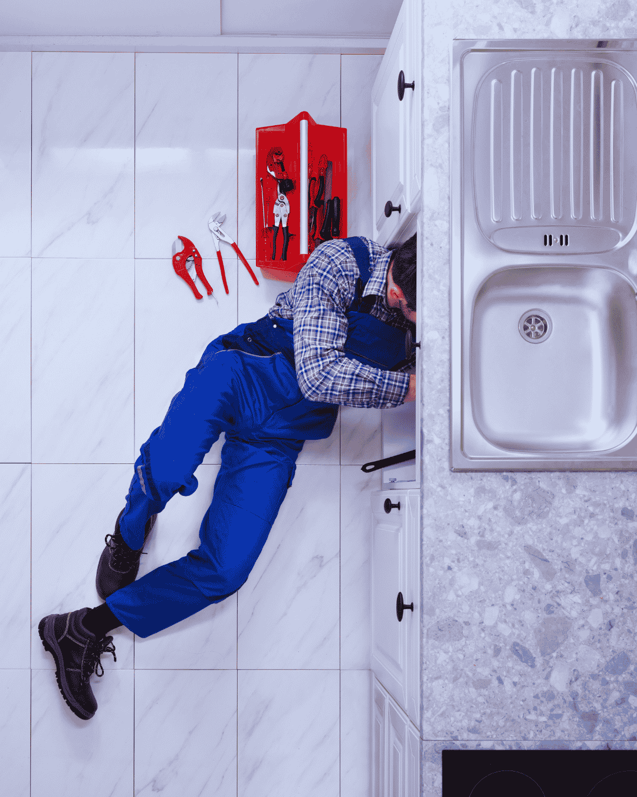
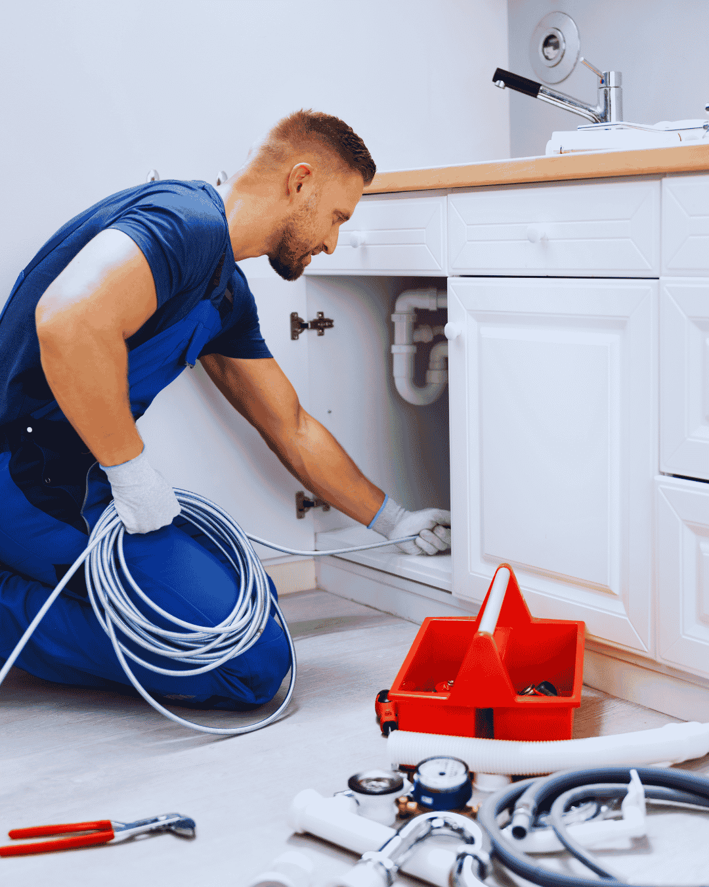
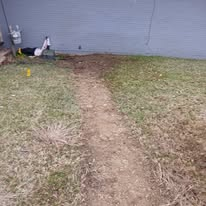

Home › Service Areas › Lake Worth Beach
Plumber in Lake Worth Beach, FL
Historic bungalows and beachside cottages need a plumber who has worked on them before.
A plumber in Lake Worth Beach spends a lot of time in old houses. The city has one of the largest concentrations of pre-1940 homes in Palm Beach County, and those bungalows still hold galvanized supply pipe and cast iron drains that were installed before most of us were born. Call (833) 567-2788 for a same-day visit and a flat written price.
Old plumbing is not automatically bad plumbing, but it needs an honest assessment. We tell you what is still serviceable, what is on borrowed time, and what has to be replaced now.

Historic homes
Galvanized Pipe in Lake Worth Beach Bungalows
Galvanized steel was standard in homes built through the 1940s and into the 1950s. It rusts from the inside, and the rust does not flake away, it builds. A three-quarter inch pipe can close down to a quarter inch of open channel without any external sign at all.
The symptoms are always the same: weak pressure that got worse over years, brown water on the first draw in the morning, and two fixtures that cannot run at once. No amount of repair fixes closed pipe. Replacement is the only real answer, and in a bungalow with accessible crawl or attic space it is less disruptive than people expect.
We work carefully in historic homes, keeping wall openings minimal and routing new PEX or copper through paths that do not disturb original plaster and trim more than necessary.


Local utility
Lake Worth Beach Water and Sewer
Lake Worth Beach runs its own municipal utilities, including water and sewer, which means permitting and connection questions go through the city rather than the county. We handle that paperwork on repipes, water heater swaps and sewer lateral work.
Sewer laterals in the older grid streets are a recurring issue. Many are clay or early cast iron, and the mature ficus and oak canopy that makes these neighborhoods beautiful sends roots straight into leaking joints. If your main line has been cleared more than twice in a year, the pipe is the problem, not the clog.
Coverage
Neighborhoods We Cover
We serve all of Lake Worth Beach, including College Park, Parrot Cove, Tropical Ridge, Bryant Park, South Palm Park and the neighborhoods around Lake and Lucerne Avenues, plus the beachside properties across the bridge.
Rental and multi-unit properties are common here, and we work with landlords and property managers on scheduled maintenance as well as emergency calls. Invoices and photo documentation are emailed the same day for your records.

Good to know
Lake Worth Beach Plumbing: Historic Homes and City Utilities
Few Palm Beach County cities have this much pre-war housing, and the plumbing reflects it.
A municipal utility of its own
Lake Worth Beach runs its own water, sewer and electric utilities. Permits, inspections and backflow reporting all go through the city rather than the county, and connection questions on repipes or sewer laterals are answered by city staff. We manage that paperwork so homeowners are not caught between departments.
Bungalows, plaster and galvanized pipe
The historic districts, including College Park, Parrot Cove and Tropical Ridge, hold a dense concentration of 1920s and 1930s bungalows. Many retain galvanized steel supply pipe that has rusted closed from the inside, along with original cast iron drains. Working in these homes means protecting plaster, wood floors and original trim, which is why we plan routes before opening anything.
Rental and multi-unit properties
A significant share of housing here is rental or converted multi-unit, often with shared laterals and stacks added piecemeal over decades. We work with landlords and property managers on both scheduled maintenance and urgent calls, and we identify which section of pipe serves which unit before quoting so costs land with the right party.
Booking a plumber in Lake Worth Beach?Call for a price range on the phone and a same-day arrival window.
Full service list
Plumbing Services We Provide in Lake Worth Beach, FL
Every service below is available at Lake Worth Beach addresses, on the same schedule and the same flat-rate pricing we use in Boynton Beach.
Emergency Plumber
Burst lines, overflowing toilets and sewage at a floor drain do not wait for business hours. We answer live, talk you through the nearest shutoff, then dispatch a licensed plumber with a stocked truck and a written flat price before any work starts. South toward the Lantana line in 33462, older laterals and shallow drain runs are the recurring problem.
Drain Cleaning
Slow showers, gurgling sinks and a main line that backs up every few months are rarely one hair clog. They are grease, scale and old cast iron that has narrowed over decades. We clear the blockage with cabling or hydro jetting, then camera the pipe so you can see what actually caused it.
Water Heater Repair & Installation
Most no-hot-water calls turn out to be a thermostat, element or gas valve rather than a dead tank, so we diagnose before we quote. When replacement is the honest answer, we size the unit to your household, pull the permit, and take the old heater away. Tight utility closets in the historic district often decide the unit size before anything else does.
Tankless Water Heater Installation
A tankless water heater ends the back-to-back shower problem and frees up the closet or garage floor. Getting twenty years out of one depends on demand sizing, gas or electrical capacity and descaling access, not the brand on the box. We size the unit to your real fixture load and build in isolation valves for annual flushing. Lake Worth Beach runs its own electric utility, so we confirm panel capacity before quoting any electric or hybrid unit.
Leak Detection and Repair
Finding the leak is the job; opening the wall is the last step. We isolate pressure zones, then use acoustic and thermal equipment to narrow a hidden leak to inches before anything is cut, whether it sits under a slab, behind tile or out in an irrigation run.
Slab Leak Repair
Warm patches on a tile floor, running water with every tap closed and hairline cracks across a room all point under the concrete. We locate the leak precisely, then price spot repair, overhead reroute and full repipe side by side so you can weigh them against each other.
Sewer Line Repair and Replacement
When the main line backs up on a schedule, the pipe is the problem rather than what went down it. A recorded camera survey gives us the depth and position of every crack, offset and root intrusion, and that footage decides whether you need a spot repair, a liner or a new lateral.
Pipe Repair and Installation
One pinhole in newer pipe is a repair. The third leak in sixty-year-old copper is a system telling you it is finished. We handle single burst lines and whole-home repiping in PEX, CPVC and copper, routed through attic and walls with small drywall openings, pressure tested and patched when we leave. The 1920s bungalows in the downtown historic district still run galvanized supply, and the post-war slab homes west of I-95 are where we find most hidden copper leaks.
Toilet Repair and Installation
A running toilet is usually a cheap part; a rocking one is a failing flange seal quietly soaking the subfloor. We tell you which you have, then repair it or set a new comfort-height unit on a fresh flange and wax seal.
Faucet & Fixture Installation
Kitchen faucets, shower valves, tub spouts, pot fillers and bidet seats all get installed with new quarter-turn angle stops and braided supply lines every time. Old seized shutoffs are the single most common cause of a call-back leak, and replacing them while the cabinet is already open costs almost nothing extra. Historic-district homes often need fixtures that suit the original layout rather than a modern rough-in, and we plan for that.
Kitchen and Bathroom Plumbing
A remodel is won or lost at rough-in, while drain slope, valve depth and venting are still easy to get right. We handle rough-in and final trim, work to your contractor's schedule, and carry the inspections through so the job closes cleanly. Rental and duplex turnovers are common here, so we keep the work fast and the finish clean.
Garbage Disposal Repair & Installation
A disposal that hums is jammed, one that is silent has lost power, and one dripping from the bottom seam has a failed motor seal that cannot be repaired. We diagnose the unit and the drain plumbing together, because a badly pitched trap arm or a missing dishwasher high loop will keep clogging no matter how good the disposal is.
Gas Line Repair and Installation
We size, run and pressure test gas lines for ranges, dryers, pool heaters, generators and outdoor kitchens, and we pull the permit. Existing buried steel gets inspected before we tie in, because sandy, damp soil is hard on older runs.
Backflow Testing and Prevention
Irrigation systems, pool fills, fire lines and commercial kitchens all need a backflow assembly tested annually and reported to the water provider. We test, repair and replace assemblies, then file the paperwork so the notice is closed out and you are not left chasing a compliance letter. Older service lines and irrigation tie-ins in 33460 and 33461 make backflow and filtration work common here.
Water Filtration Installation
Hard water costs you a water heater long before you notice it on the glassware. We test first, then size a softener, carbon tank or reverse osmosis system to the result and your real demand, and install it where filter changes are not a chore. The City of Lake Worth Beach handles its own permitting, and we file and close it for you.
Sump Pump Installation and Repair
A high water table means a sump pump is the difference between a damp slab and a flooded room. We install and replace pumps, check the float, the discharge line and the check valve, and add battery backup where losing power at the wrong moment is the real risk.
FAQs
Lake Worth Beach Plumbing Questions, Answered
Do you work on historic homes?
Regularly. We keep wall and floor openings minimal and route new lines to avoid damaging original plaster, trim and flooring.
My water pressure is terrible. Can it be fixed?
If the home has galvanized pipe, the pipe is closed with rust and needs replacing. We test first so you are not repiping unnecessarily.
Who handles permits in Lake Worth Beach?
The city runs its own utilities and permitting. We pull permits and schedule inspections directly with them.
Do you serve rental property owners?
Yes. We work with landlords and property managers on both scheduled work and emergency calls, with same-day documentation.
Coverage by ZIP code
Lake Worth Beach Plumber Coverage by ZIP Code
We cover Lake Worth Beach from the historic bungalow blocks downtown in 33460 to the slab-built neighborhoods west of I-95 in 33461. Emergency plumbing, repipes and drain cleaning are dispatched to all three city ZIP codes the same day.
Plumber in 33460
Historic downtown Lake Worth Beach around Lake and Lucerne Avenues. 1920s bungalows where galvanized supply replacement and cast iron drain repair are routine.
Plumber in 33461
West of I-95 toward the Palm Springs line. Post-war slab homes needing slab leak detection, whole-home repipes and water heater replacement.
Plumber in 33462
South Lake Worth Beach toward the Lantana and Hypoluxo boundaries. Drain cleaning, sewer lateral repair and after-hours emergency plumber calls.
Adjacent Lake Worth mailing ZIP codes we also cover
- 33463
- 33467
- 33406
- 33415
- 33435
Not sure which ZIP code you are in? Call (833) 567-2788 and we will confirm coverage and give you an arrival window before anyone is dispatched.
Nearby Cities Our Plumbers Serve
Need a plumber in Lake Worth Beach today?
Call now for a live answer, a flat written price and a same-day arrival window across Lake Worth Beach and Palm Beach County.